Ringkasnya
- Buka borang Minyak (bar kuning). Semak lori, nama anda dan tarikh.
- Tekan Ambil foto resit. Borang baca resit dan isi RM dan liter untuk anda.
- Semak dengan resit, kemudian taip odometer.
- Tekan Simpan. Tunggu sehingga keluar Disimpan.
- Tak isi minyak hari ini? Tekan butang merah Tak isi minyak.
1Buka borang
Buka pautan cawangan anda:
Buka borang Minyak Mentakabclfproject01.github.io/clf-transport-forms/CLF_Fuel_Form.html Buka borang Minyak Kuantanclfproject01.github.io/clf-transport-forms/CLF_Fuel_Form.html?branch=KTNPautan Kuantan berakhir dengan ?branch=KTN. Pautan lama anda masih boleh digunakan.
- Bar kuning dan MINYAK = borang minyak. Borang POD ada bar biru. Pastikan anda buka borang yang betul.
- Nama cawangan. Mesti cawangan anda. Jika tertulis cawangan lain, anda buka pautan yang salah.
- Titik hijau = ada internet. Titik kelabu = tiada internet.
- BM EN untuk tukar bahasa. Telefon ingat pilihan anda, juga untuk borang POD.
2Lori, pemandu dan tarikh
Kotak Maklumat perjalanan berada di atas sekali. Kali pertama, kotak ini terbuka dan kosong.
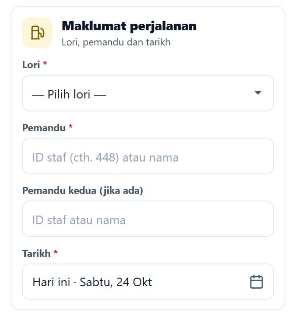
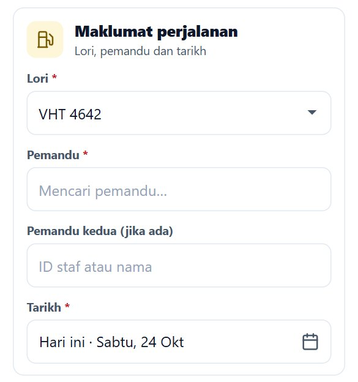
- Lori: pilih nombor lori yang anda isi minyak dahulu. Kotak Pemandu tertulis Mencari pemandu… sekejap.
- Pemandu: nama anda biasanya terisi sendiri, dari jadual pejabat untuk lori itu atau dari ingatan telefon. Semak betul atau tidak. Jika kosong atau salah, taip ID staf anda (contoh
901) atau nama anda, kemudian tekan nama anda dalam senarai. - Pemandu kedua (jika ada): isi hanya jika dua orang dalam lori. Jika seorang, biarkan kosong.
- Tarikh: sudah diisi dengan tarikh hari ini (tertulis Hari ini). Tukar hanya jika anda isi minyak pada hari lain. Tarikh esok tidak boleh dipilih.
Tukar lori = semak nama semula. Setiap kali lori ditukar, nama dicari semula untuk lori baharu. Pastikan nama yang keluar ialah nama anda.
Kotak dilipat jadi 3 baris
Bila lori, nama dan tarikh sudah lengkap, kotak dilipat jadi 3 baris: lori, tarikh, nama. Tekan Ubah untuk buka semula, tekan Siap untuk lipat semula. Telefon ingat lori dan nama anda, jadi esok semuanya sudah terisi.
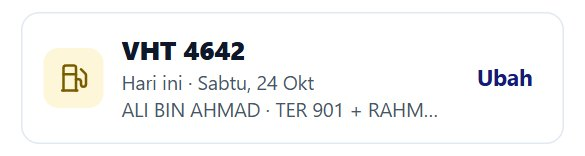
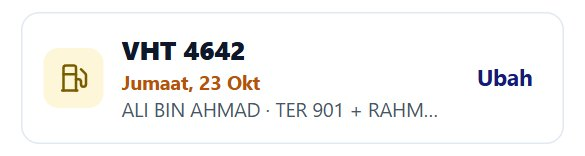
3Ambil foto resit
Selepas lori dan nama siap, kotak minyak hanya ada dua butang: Ambil foto resit dan butang merah Tak isi minyak.
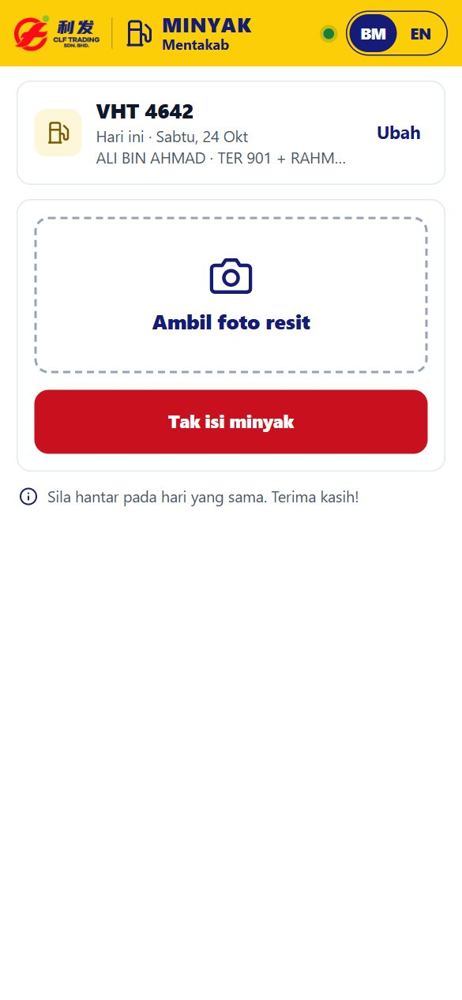
- Tekan Ambil foto resit. Pilih kamera, atau pilih foto resit yang sudah diambil dari galeri.
- Ambil foto seluruh resit seperti di bawah.
- Tunggu beberapa saat. Borang tertulis Membaca resit….
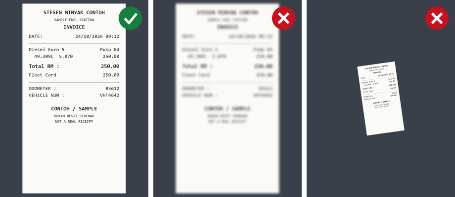
Foto yang baik:
- Letak resit rata, ambil dari dekat, di tempat terang.
- Seluruh resit dalam bingkai, nombor tidak kabur.
- Satu foto, satu resit.
- Jangan tutup nombor dengan jari.
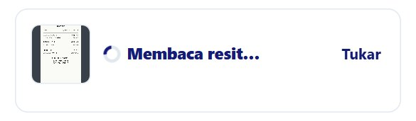
4Semak RM dan liter
Jika resit dapat dibaca dengan pasti, borang isi Jumlah (RM) dan Liter untuk anda.
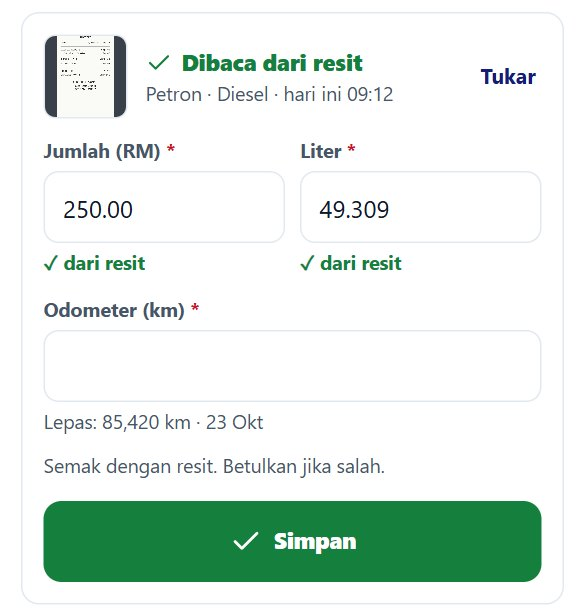
- ✓ Dibaca dari resit, dan di bawahnya: stesen · jenis minyak · tarikh dan masa pada resit. Jika tarikh resit bukan tarikh isi minyak, atau minyak bukan diesel, baris ini bertukar oren. Semak resit anda.
- Kotak RM dan liter sudah diisi, dengan tanda ✓ dari resit.
- Semak dengan resit. Jika salah, betulkan nombor itu. Tanda ✓ dari resit hilang bila anda ubah nombor.
Bila borang tidak isi
Borang hanya isi nombor yang ia pasti betul. Jika tidak pasti, kotak dibiarkan kosong:
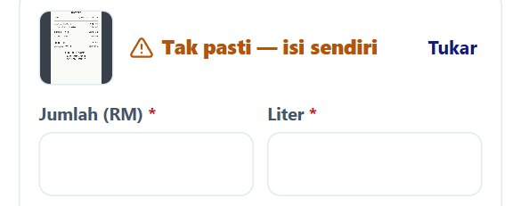
| Mesej | Apa perlu buat |
|---|---|
| Tak pasti — isi sendiri Tak dapat dibaca — isi sendiri | Taip RM dan liter dari resit. |
| Foto kabur Resit terlalu jauh Nombor terlindung Terlalu gelap / silau | Tekan Ambil foto semula dan ambil foto yang lebih baik. Atau taip sendiri. |
| 2 resit dalam 1 foto | Tekan Ambil foto semula dan ambil foto satu resit sahaja. |
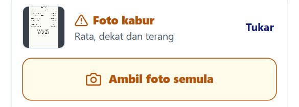
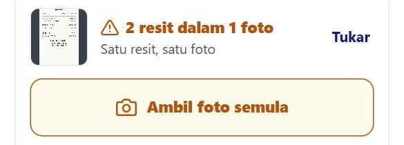
Resit PREPAY (tiada liter)
Sesetengah resit tertulis * PREPAY SALE IS NOT FINAL *. Resit ini tidak ada liter, jadi borang tidak dapat isi. Sebelum tinggalkan pam, lihat skrin pam dan taip RM dan liter seperti di skrin pam.
5Odometer
Taip nombor pada odometer lori sekarang, setiap kali anda isi minyak. Bukan anggaran, bukan nombor semalam.
- Di bawah kotak tertulis bacaan lepas, contoh Lepas: 85,420 km · 23 Okt. Nombor anda mesti lebih besar.
- Jika tertulis hijau Sudah dihantar hari ini, lori ini sudah ada rekod minyak hari ini. Jangan hantar resit yang sama dua kali.
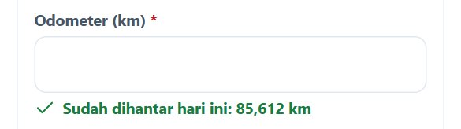
Kenapa setiap kali? Pejabat kira jarak dan minyak setiap km daripada odometer hari ini tolak odometer lepas. Nombor salah = kiraan salah.
6Simpan
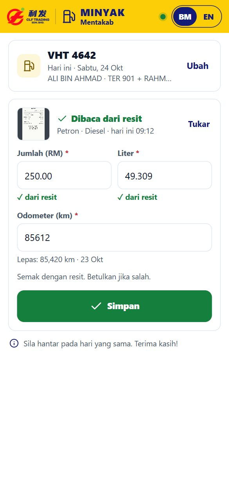
- Tekan Simpan. Skrin biru Menyimpan… keluar. Jangan tutup borang.
- Tunggu skrin Disimpan, dengan RM, liter, lori, odometer, tarikh dan masa.
- Tekan Selesai. Lori dan nama anda kekal untuk resit seterusnya.
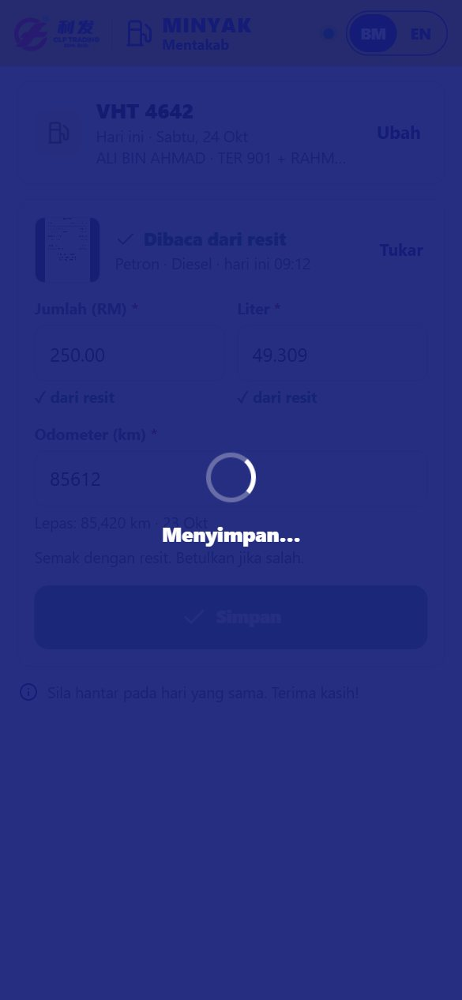
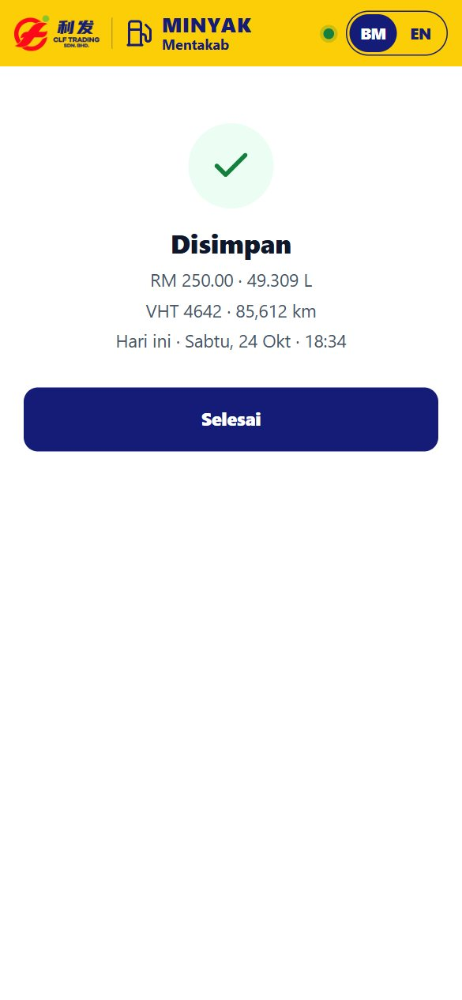
Belum disahkan
Jika liputan lemah, borang mungkin tidak dapat pastikan rekod sudah masuk. Ia tidak akan tulis “Disimpan”. Sebaliknya keluar kotak oren:
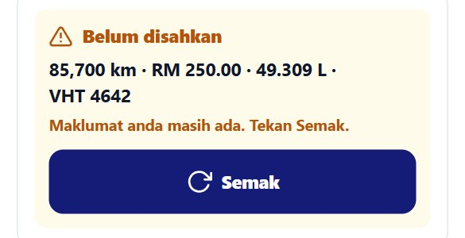
- Tekan Semak bila ada liputan. Borang semak sama ada rekod sudah masuk.
- Jika tertulis Masih belum disahkan, tunggu sebentar dan tekan Semak lagi.
- Hanya jika tertulis Tidak masuk ke sistem. Tekan Hantar semula., tekan Hantar semula.
Jangan isi borang baharu untuk resit yang sama semasa kotak ini ada. Rekod anda masih disimpan dalam telefon, walaupun borang ditutup.
Tidak disimpan. Cuba lagi.
Tulisan merah ini bermaksud rekod tidak masuk. Semua yang anda isi masih ada. Tekan Simpan semula. Jika tiada internet, keluar Tiada liputan. Cuba lagi bila ada liputan.
7Tak isi minyak
Hari ini tidak isi minyak? Jangan isi borang penuh.
- Pastikan lori dan nama anda betul.
- Tekan butang merah Tak isi minyak (sebelum ambil foto).
- Keluar soalan Tak isi minyak hari ini? dengan lori dan nama. Tekan Ya, hantar. Tekan Batal jika tersalah tekan.
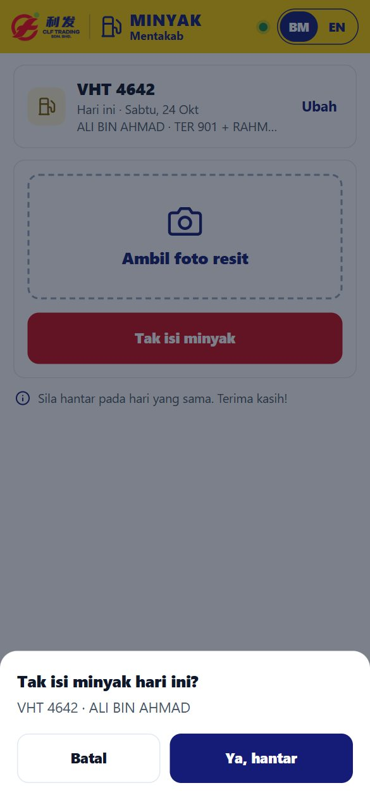
Tiada odometer, RM, liter atau foto diperlukan. Jika liputan putus, keluar Belum pasti disimpan. Semak liputan dan cuba lagi. Tekan semula bila ada liputan.
8Semakan sebelum simpan
Bila anda tekan Simpan, borang semak nombor anda. Tiada apa dihantar sehingga semua betul.
| Anda nampak | Maksud dan apa perlu buat |
|---|---|
| Wajib diisi | Kotak ini kosong. Isi kotak itu. |
| Lebih RM 500 — semak semula | RM lebih 500 tidak boleh disimpan. Semak resit: mungkin salah taip. Jika memang lebih RM 500, beritahu penyelia. |
| Odometer lebih rendah dari lepas? | Odometer anda lebih kecil daripada bacaan lepas. Tekan Ubah dan betulkan. Tekan Ya, betul hanya jika nombor itu memang betul. |
| +2,580 km sejak lepas? | Lompatan lebih 1,500 km. Biasanya salah taip. Semak odometer. |
| RM 25.00 seliter? Jumlah dan liter tertukar? | Harga seliter tidak masuk akal. Mungkin RM dan liter tertukar, atau liter salah. |
| Sama dengan pemandu | Pemandu kedua sama dengan pemandu. Pilih orang lain atau kosongkan. |
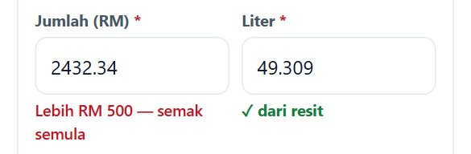
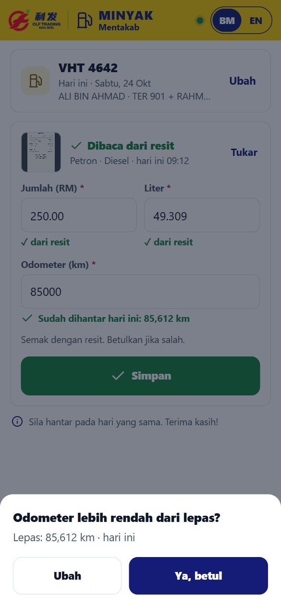
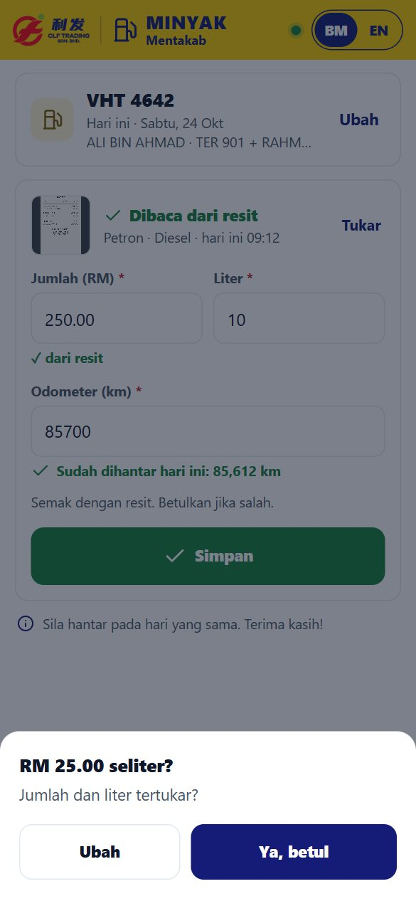
9Soalan lazim
Borang hilang selepas buka kamera
Sesetengah telefon tutup borang semasa kamera dibuka. Buka pautan semula. Nombor yang anda sudah taip masih ada (selama 1 jam). Ambil foto lagi.
Senarai lori tidak keluar
Jika kotak lori tertulis ⚠ Tekan untuk cuba lagi, tekan kotak itu. Borang juga cuba semula sendiri.
Titik kelabu
Tiada internet. Anda masih boleh isi borang, tetapi tunggu ada liputan sebelum tekan Simpan.
Tarikh, lori atau nama salah
Tekan Ubah pada kotak perjalanan dan betulkan.
Isi minyak dua kali dalam sehari
Hantar setiap resit sebagai satu rekod: foto resit pertama, Simpan, Selesai, kemudian foto resit kedua dan Simpan lagi.
10Peraturan penting
Sila hantar pada hari yang sama. Terima kasih! Hantar sejurus selepas isi minyak, semasa resit masih di tangan.
- 1 resit = 1 foto = 1 rekod. Seluruh resit dalam foto, nombor jelas.
- Odometer sebenar setiap kali.
- RM dan liter mesti sama dengan resit. Jangan ubah nombor yang betul.
- Jangan hantar resit yang sama dua kali.
- Jika Belum disahkan, tekan Semak. Jangan isi semula.